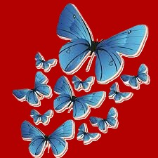

Heroine: Rachel Morgan
Rachel Morgan is a fierce, independent witch who works as a bounty hunter in a world full of supernatural creatures. With a strong moral compass, she often finds herself caught between doing what's right and navigating the complex world of politics and personal desires. Her quick wit, determination, and resilience make her a powerful figure, even when facing overwhelming odds. Despite her flaws and mistakes, Rachel's growth throughout her journey showcases her ability to face adversity with heart and strength.
Jenks
Jenks is a witty, sarcastic pixie who serves as Rachel Morgan's loyal partner and friend in "The Hollows" series. Despite his small size, he is a fierce fighter, skilled with both magic and weapons, often providing comic relief while also adding depth to the team dynamic. Jenks has a deep love for his family and a strong sense of loyalty, especially to Rachel, even when things get complicated. His bravery and no-nonsense attitude make him an invaluable ally, and his growth throughout the series reveals a complex and caring character beneath the tough exterior.
Ivy

Ivy Tamwood is a skilled vampire and Rachel Morgan's best friend and roommate in The Hollows. Fiercely independent and morally conflicted, Ivy struggles with her vampiric nature, especially her thirst for blood, which often causes tension in her relationships. Her deep loyalty to Rachel is evident, and she acts as both a mentor and protector, despite her internal battles. Ivy's character evolves from a reserved, almost tortured figure into a more self-assured and accepting individual, dealing with complex emotions around love, identity, and her vampire heritage.
Algalierept
Al is a powerful and somewhat unpredictable demon in The Hollows series, often portrayed as an antagonist with his own complex motivations. He runs a business in the supernatural world, sometimes aligning with Rachel and other times opposing her, making him a morally gray character. Though initially self-serving and ruthless, Al's interactions with Rachel reveal layers of vulnerability, showcasing a struggle between his demonic nature and a desire for something more. Over time, Al's relationship with Rachel becomes less adversarial, hinting at a deeper connection and a potential for growth and redemption.
Trent
Trent Kalamack is a wealthy and influential businessman with deep ties to the supernatural world in The Hollows series. Initially presented as a villain, his motives are often shrouded in secrecy, and he’s involved in morally dubious activities, particularly in his dealings with witches and other magical beings. Despite his manipulative and sometimes ruthless behavior, Trent's character is more layered than it first appears, with moments of vulnerability and hints of redemption. Over time, his complex relationship with Rachel Morgan evolves, revealing a blend of attraction, rivalry, and a shared desire to fight against greater threats.